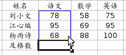

OpenOffice.org 教程之 Calc 电子表格
作者：TeliuTe 来源：基础教程网
九、统计函数 返回目录 下一课有时候需要进行一些数据统计，比如算一下及格人数，各个分数段等等，下面我们来看一个练习；
1、启动Calc
1）点击点菜单“应用程序－办公－OpenOffice.org 电子表格”；
2）点菜单“文件－打开”命令，在自己的文件夹中找到上次保存的“成绩表”文件，打开它；
2、统计函数
1）在姓名的最下面输入“及格数”，设置好格式，然后把光标移到右边一格；
2）点一下编辑栏里的“f(x)”，在出来的“函数向导”面板里点分类里的“全部－数学”，在下面找到“COUNTIF”，点击选中，然后点“继续”按钮；
3）接下来是数据区域面板，在表格里“78”向下拖到“68”，框选中三个人的语文成绩；

4）切换到英文输入法，在函数向导面板中间的第二个文本框中输入">=60"，注意用一对英文双引号括起来，
然后点“确定”，也就是60分以上算及格；
点“确定”后，单元格中出现统计结果；
5）拖动填充手柄，把旁边两格也填充上，这样就把各学科的及格人数统计好了，保存一下文件；
本节学习了Calc中统计函数的基本操作，如果你成功地完成了练习，请继续学习下一课内容；
本教程由86团学校TeliuTe制作|著作权所有
基础教程网：http://teliute.org
美丽的校园……
转载和引用本站内容，请保留版权信息和本站链接。